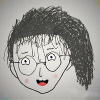

<!DOCTYPE html><html lang="en"><head><title>一个坏掉的番茄</title><meta charset="utf-8"><meta name="viewport" content="width=device-width,initial-scale=1,maximum-scale=2"><meta http-equiv="X-UA-Compatible" content="IE=edge,chrome=1"><meta name="renderer" content="webkit"><meta name="theme-color" content="#222325"><meta name="apple-mobile-web-app-status-bar-style" content="#222325"><meta name="msapplication-navbutton-color" content="#222325"><link rel="stylesheet" href="https://cdn.jsdelivr.net/gh/Tomotoes/font/font.min.css"><link rel="stylesheet" href="css/style.css"><meta http-equiv="x-dns-prefetch-control" content="on"><link rel="dns-prefetch" href="https://cdn.jsdelivr.net"><link rel="prefetch" href="https://cdn.jsdelivr.net/"><meta name="description" content="Author:SimonMa,Category:Personal Blog"><link rel="icon" href="favicon.ico" type="image/x-icon"><link rel="shortcut icon" href="favicon.ico" type="image/x-icon"><!--[if lt IE 9]><style>.alert { padding: 15px; margin-bottom: 20px; border: 1px solid transparent; border-radius: 4px } .alert-danger { background-color: #f2dede; border-color: #ebccd1; color: #a94442; border-bottom: 1px solid #ebccd1 } .alert-link { color: #843534; font-weight: bold } .topframe { margin: 0; padding-left: 15px; padding-right: 15px; text-align: center; border-radius: 0; position: fixed; left: 0; right: 0; top: 0; z-index: 1000 }
</style><div class="alert alert-danger topframe">你的浏览器实在<strong>太太太太太太旧了</strong>，放学别走，升级完浏览器再说<a class="alert-link" target="_blank" href="http://browsehappy.com">立即升级</a></div><script src="https://cdn.bootcss.com/html5shiv/r29/html5.min.js"></script><script src="https://cdn.bootcss.com/respond.js/1.4.2/respond.min.js"></script><![endif]--></head></html><body><main><div class="content content-intro"><div class="content-inner"><canvas id="background"></canvas><div class="wrap fade"><a class="github-corner" href="https://github.com/Tomotoes/HomePage" aria-label="View source on GitHub" target="_blank" rel="noopener noreferrer"><svg width="80" height="80" viewBox="0 0 250 250" style="fill:transparent; color:#fff; position: absolute; top: 0; border: 0; right: 0;" aria-hidden="true"><path d="M0 0 115 115 130 115 142 142 250 250 250 0Z"></path><path class="octo-arm" d="M128.3 109C113.8 99.7 119 89.6 119 89.6 122 82.7 120.5 78.6 120.5 78.6 119.2 72 123.4 76.3 123.4 76.3 127.3 80.9 125.5 87.3 125.5 87.3 122.9 97.6 130.6 101.9 134.4 103.2" fill="currentColor" style="transform-origin: 130px 106px;"></path><path class="octo-body" d="M115 115C114.9 115.1 118.7 116.5 119.8 115.4L133.7 101.6C136.9 99.2 139.9 98.4 142.2 98.6 133.8 88 127.5 74.4 143.8 58 148.5 53.4 154 51.2 159.7 51 160.3 49.4 163.2 43.6 171.4 40.1 171.4 40.1 176.1 42.5 178.8 56.2 183.1 58.6 187.2 61.8 190.9 65.4 194.5 69 197.7 73.2 200.1 77.6 213.8 80.2 216.3 84.9 216.3 84.9 212.7 93.1 206.9 96 205.4 96.6 205.1 102.4 203 107.8 198.3 112.5 181.9 128.9 168.3 122.5 157.7 114.1 157.9 116.9 156.7 120.9 152.7 124.9L141 136.5C139.8 137.7 141.6 141.9 141.8 141.8Z" fill="currentColor"></path></svg></a><style>.github-corner:hover .octo-arm{animation:octocat-wave 560ms ease-in-out}@keyframes octocat-wave{0%,100%{transform:rotate(0)}20%,60%{transform:rotate(-25deg)}40%,80%{transform:rotate(10deg)}}@media (max-width:500px){.github-corner:hover .octo-arm{animation:none}.github-corner .octo-arm{animation:octocat-wave 560ms ease-in-out}}</style><h2 class="content-title">Simon Ma</h2><h3 class="content-subtitle" original-content="Front back left right end engineer">&nbsp;</h3><a class="enter">enter</a><div class="arrow arrow-1"></div><div class="arrow arrow-2"></div></div></div><div class="shape-wrap"><svg class="shape" width="100%" height="100vh" preserveAspectRatio="none" viewBox="0 0 1440 800" xmlns:pathdata="http://www.codrops.com/"><path d="M-44-50C-52.71 28.52 15.86 8.186 184 14.69 383.3 22.39 462.5 12.58 638 14 835.5 15.6 987 6.4 1194 13.86 1661 30.68 1652-36.74 1582-140.1 1512-243.5 15.88-589.5-44-50Z" pathdata:id="M -44,-50 C -137.1,117.4 67.86,445.5 236,452 435.3,459.7 500.5,242.6 676,244 873.5,245.6 957,522.4 1154,594 1593,753.7 1793,226.3 1582,-126 1371,-478.3 219.8,-524.2 -44,-50 Z"></path></svg></div></div><div class="content content-main"><div id="card"><div class="card-inner fade"><header><h1 data-translate="name">Simon Ma</h1><h2 id="signature" data-translate="signature">Code &amp; Input &amp; Output</h2></header><ul><li><a href="blog/" aria-label="Blog"><i class="icon icon-bokeyuan"></i><span data-translate="Blog">Blog</span></a></li><li><a href="about/" aria-label="About"><i class="icon icon-xiaolian"></i><span data-translate="About">About</span></a></li><li><a href="mailto:simon@tomotoes.com" aria-label="Email" target="_blank"><i class="icon icon-email"></i><span data-translate="Email">Email</span></a></li><li><a href="https://github.com/tomotoes" aria-label="Github" target="_blank"><i class="icon icon-github"></i><span data-translate="Github">Github</span></a></li></ul></div></div></div><script src="https://cdn.jsdelivr.net/npm/animejs@3.1.0/lib/anime.min.js"></script><script>window.$ = selector => document.querySelector(selector)
const getOriginalContent = selector => $(selector).getAttribute("original-content")
window.subtitle = getOriginalContent(".content-subtitle")
window.signature = getOriginalContent("#signature")
window.config = {
	SIM_RESOLUTION: 128,
	DYE_RESOLUTION: 1024,
	CAPTURE_RESOLUTION: 512,
	DENSITY_DISSIPATION: 1,
	VELOCITY_DISSIPATION: 0.2,
	PRESSURE: 0.8,
	PRESSURE_ITERATIONS: 20,
	CURL: 30,
	SPLAT_RADIUS: 0.25,
	SPLAT_FORCE: 6000,
	SHADING: true,
	COLORFUL: true,
	COLOR_UPDATE_SPEED: 10,
	PAUSED: false,
	BACK_COLOR: { r: 30, g: 31, b: 33 },
	TRANSPARENT: false,
	BLOOM: true,
	BLOOM_ITERATIONS: 8,
	BLOOM_RESOLUTION: 256,
	BLOOM_INTENSITY: 0.4,
	BLOOM_THRESHOLD: 0.8,
	BLOOM_SOFT_KNEE: 0.7,
	SUNRAYS: true,
	SUNRAYS_RESOLUTION: 196,
	SUNRAYS_WEIGHT: 1.0,
}
</script><script src="js/main.js"></script><script src="js/background.js"></script><script src="https://cdn.jsdelivr.net/gh/Tomotoes/js/log.min.js"></script></main></body>